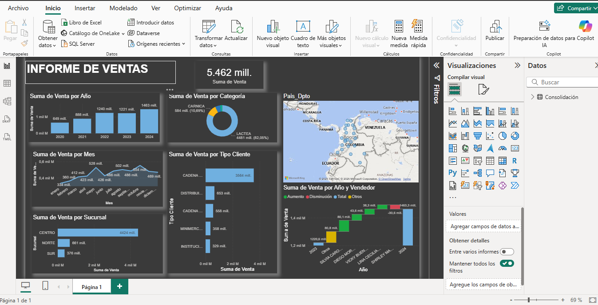

Power BI — Dashboard de Ventas: análisis y buenas prácticas
En este artículo comparto un dashboard de ventas desarrollado en Power BI, cuyo objetivo es analizar el comportamiento de las ventas, los ingresos y las variaciones frente a las metas planteadas. El propósito es mostrar cómo una herramienta de visualización puede convertirse en un aliado estratégico para la toma de decisiones.
Dashboard de Ventas en Power BI
Para comenzar, aquí tienes una vista previa del tablero de ventas creado en Power BI:
Y aquí puedes explorar el dashboard de manera interactiva:
Buenas prácticas aplicadas
- Uso de gráficos claros para cada nivel de análisis (barras, líneas y tarjetas).
- Diseño con colores consistentes para diferenciar indicadores clave.
- Filtros interactivos que permiten al usuario explorar la información.
- Incorporación de métricas de comparación frente a metas.
Conclusiones
Power BI es una herramienta poderosa que facilita la creación de reportes interactivos y visualmente atractivos. Este dashboard es solo un ejemplo de cómo transformar los datos en información clara y práctica para la gestión comercial.